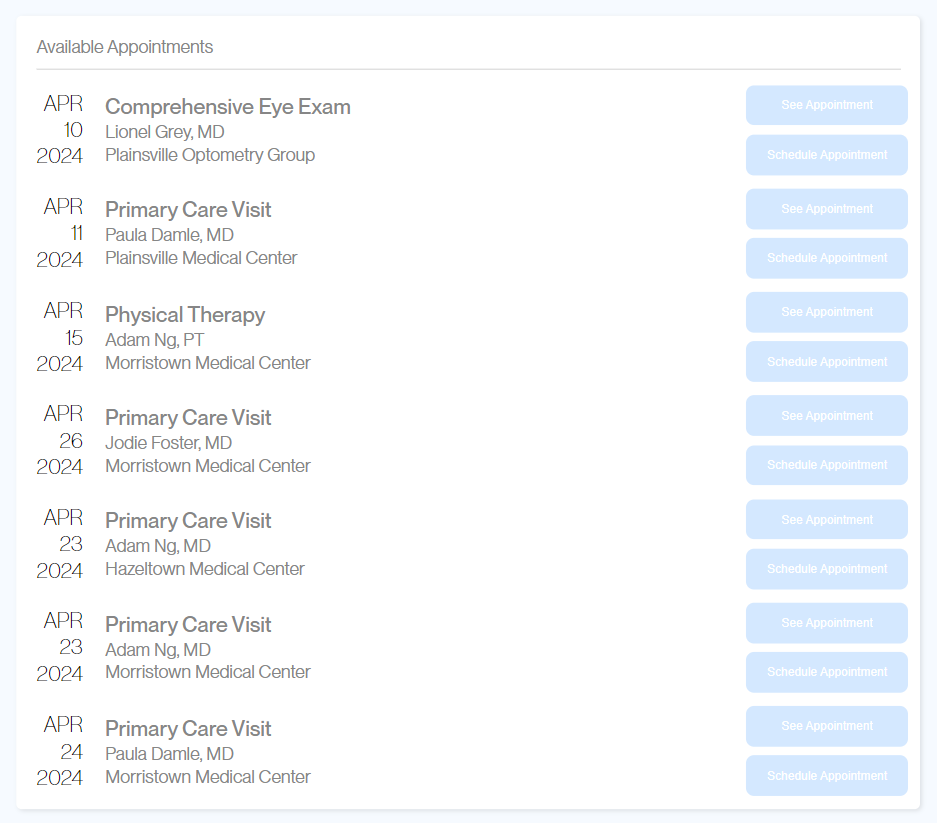
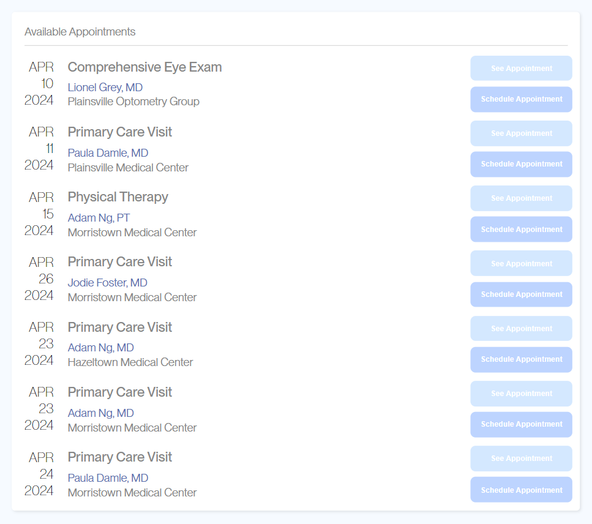

A/B Testing Assignment
When you log into your favorite apps, you may notice some subtle changes: buttons are more prominent, and everything seems easier to navigate. Behind this seamless experience is often a process called A/B testing, where designers compare two versions of the page against each other to determine which one performs better.
The aim of this project is to reveal the effectiveness of two different user interface designs (version A and version B) in improving user engagement and efficiency. We wanted to address the question of whether one design was significantly better than the other in terms of user interaction metrics such as misclicks, time on page, and time to first click. By presenting the designs to a sample of users and collecting data on their interactions, A/B testing with statistical analysis allowed us to isolate the impact of the design changes.
Data Collection
The Version A (Left below) is origin page before revising. The Version B
(Right below) is the interface after we have modified it. Though a traditional A/B test randomly assigns users to either version A or version B, this will allow us to collect enough data for the later parts.


The changes made between the two versions
Setting the background color of the "Submit Appointment" and "See Appointment" buttons to different colors.
Adjusting the line spacing between the appointment information.
Adjusting the color of the doctor's name to make it stand out more in comparison to the rest.
As we get into A/B testing, our first step was to present our designs to a group of 25 users. The hypothesis was simple: could changing the color of a button or adjusting the spacing between lines of text make a noticeable difference in user experience? Analyzing misclick rates, time for first click, and time spent on the page, we discovered the effect design elements have on user behavior. In general, we hypothesized that version B, with its intuitive design, would outperform version A.
Create Hypothesis
Misclick rate: the frequency with which users click something else on the page before finding the correct button for the task.
Null Hypothesis: Users interacting with Version A will have the same false positive rate as users interacting with Version B.
Predictions with justification: We would reject the null hypothesis if the buttons in Version B's user interface are more intuitive and obvious, resulting in a lower false click rate.
Alternative hypothesis: Users interacting with Version B have a lower false click rate than users interacting with Version A.
Reasoning: In version A, both buttons have the same background color. In contrast, in version B, the background color of the "Submit Appointment" and "View Appointment" buttons were set to different colors to reduce the likelihood of false clicks by users. This design change makes it easier for users to distinguish between the two functions, thus reducing the chance of misclicks.
Time on page: time spent on the webpage for each user group.
Null Hypothesis: There is no difference in the amount of time users spend on the page between version A and version B.
Predictions with justification: If Version B presents information more intuitively and the interaction design is more user-friendly, allowing users to complete tasks more quickly, we might predict that the null hypothesis will be rejected.
Alternative hypothesis: Users of version B spend less time on the page compared to version A.
Reasoning: All appointment information in Version A is stacked closely together. In contrast, by adjusting the line spacing between the appointment information (e.g., title, doctor's name, and location) in Version B, the readability of the information and the speed at which users can recognize the information has been improved. This design reduces the user's time on the page.
Time to first click: The time (in milliseconds) for the user to perform the first click.
Null Hypothesis: Users of version A and version B have the same first click time.
Predictions with justification: we will reject the null hypothesis if version B's important elements are more accessible and the page layout is clear, thus speeding up user interaction.
Alternative hypothesis: Users of Version B have a shorter time to first click than Version A.
Reasoning: In version A, the same color was used for all appointment information. In contrast, in version B, the color of the doctor's name has been adjusted to make it stand out more in comparison to the rest of the appointment information. This design is intended to help users recognize key information more quickly, thus speeding up their execution of targeted actions, such as clicking the Appointment button.
Run Statistical Tests on the Data
Now it was time to bring the high-fidelity wireframe to life using HTML and CSS. To view the final design, check Redesign Page !! Please be curious to try all the components that appear to have responsive designs as well as different screen sizes!